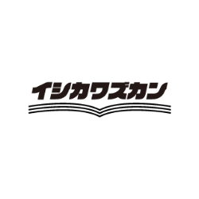

SUPPORTED BY EARNEST TECHNOLOGIES
部活で学校を選ぶ、という新しい選択肢。
全国の高校・中学・大学の「部活」が検索できるサイトです。偏差値だけではなく、部活動でも学校探しができる新しいメディアとして、学校選びの幅を広げています。
部活ナビ公式サイト →PARTNERS
泥ん子運動会2026は、たくさんの方の協力をいただきながら9月20日に開催することができました。このページでは、活動を支えてくださった協賛企業・協力企業・連携団体をご紹介します。

SPONSORS
ご支援への感謝を込めて、協賛企業の皆さまとそのサービスをご紹介します。
全国の高校・中学・大学の「部活」が検索できるサイトです。偏差値だけではなく、部活動でも学校探しができる新しいメディアとして、学校選びの幅を広げています。
部活ナビ公式サイト →「逆転コーチング」は、志望校合格者の専属コーチが、1日単位の学習計画作成と日々の進捗管理をマンツーマンで支える大学受験オンライン塾です。
逆転コーチング公式サイト →
石川県を中心に北陸三県で活動する「萬屋おてる」さんに、NOTO Re:Bloomの取り組みを応援していただきました。
HOW WE INTRODUCE SUPPORT
企業名やロゴだけでなく、ご希望に合わせてサービスや取り組みも紹介しています。
企業名、ロゴ、サービスや事業内容、公式サイトへのリンクを掲載します。
企業名だけでなく、サービス名や取り組みもWebサイト上でご紹介します。
ご希望があれば、バナーや紹介素材も活動報告などで使用します。
サービス名を出したい、素材を使いたいなど、ご希望を伺いながら調整します。
COLLABORATION
協賛とは別の形でも、企画やつながりづくりを支えていただいています。
石川県主催・北國新聞社特別協力の学生プロジェクト。泥ん子運動会の情報発信と学生参加に向けて連携いただきました。
「NOTO-REBOOST U-23」を共催し、スポーツビジネスの講義や企画づくりを通じて学生の挑戦を支えていただきました。

「NOTO-REBOOST U-23」を主催し、学生が能登の地域や企業と出会い、事業づくりへ挑戦する機会をつくっていただきました。
9月20日の泥ん子運動会に向けた協賛募集は8月21日で締め切り、イベントは予定どおり開催しました。ご協力・ご相談をいただいた皆さま、ありがとうございます。